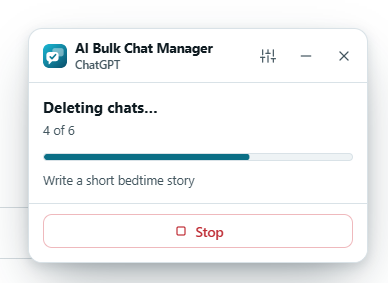
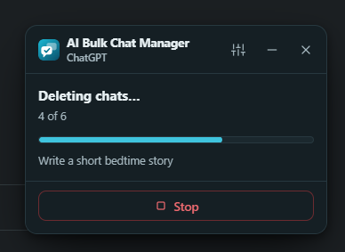
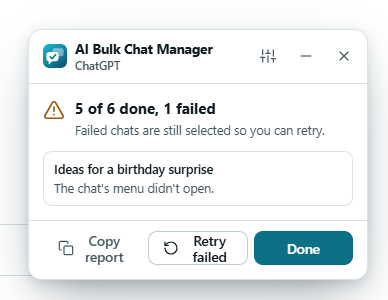
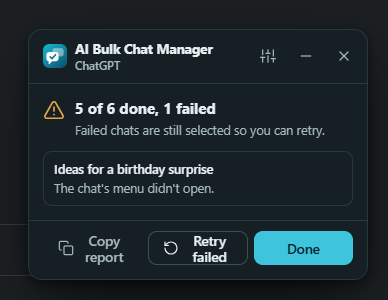

Delete or archive#
Both actions work on the chats you ticked. Press the button at the bottom of the panel.
- Delete
- Available on ChatGPT, Claude, Gemini and Grok. With chats selected the button shows the count, for example Delete 5.
- Archive
- Available on ChatGPT only. The chats leave your chat list and you can restore them from ChatGPT’s archive. The other three sites do not offer archiving, so the Archive button is hidden there.
Both buttons are disabled until you tick at least one chat.
The confirmation dialog#
Nothing happens until you confirm. A dialog opens over the page.


- The title asks Delete 5 chats? (or Archive 5 chats?). The text under it says where the chats will be removed from. For a delete it adds This can’t be undone.
- The list shows the title of every selected chat. With more than eight chats a search box appears, labelled Search the selected chats, to find a title in the list.
- Cancel has the focus when the dialog opens, not the destructive button. Pressing Enter at once cancels.
- Esc closes the dialog. So does a click outside it. Tab stays inside the dialog.
The extra tick for big deletes
When you delete more chats than a threshold, the dialog also shows I understand this can’t be undone. The red button stays disabled until you tick it. The default threshold is 20, so deleting 21 or more needs the tick. Change it in Options, Behavior, in Extra confirmation above (1 to 500). Archiving never needs the tick.
How the work is done#
There are two routes. The extension picks one for each chat.
Fast mode (the default)
On ChatGPT, Claude and Grok, fast mode asks the site directly to delete or archive each chat. It sends the same kind of request the site’s own buttons send, from the page you are on, using the session you are already signed in with. A few chats are handled at a time with short pauses between requests, and the chat disappears from the sidebar when it is done. This is much faster and does not need the site’s menus on screen.
If the site asks the extension to slow down, it waits and tries that chat once more.
Page menus (the fallback)
The extension clicks through the site’s own menus like a person: it opens the chat’s three-dot menu, chooses Delete (or Archive) and confirms in the site’s dialog. It does this one chat at a time, so it is slower.
It is used when:
- you turned Fast mode off;
- the site is Gemini, which has no request the extension can use, so Gemini always uses its menus (the Fast mode switch is disabled there);
- a fast request failed for a chat: the site refused it, the network failed, the session was rejected, or the site changed the way the request works.
Only the chats that failed fast go through the menus. The rest are not repeated.
How it avoids clicking the wrong thing
- It looks for the three-dot button inside that chat’s own row, never elsewhere in the sidebar.
- It picks a menu item by its label, never by its position. It knows the words for Delete and Archive in more than two dozen interface languages. An item such as Remove from project is never chosen for Delete.
- The confirm button in the site’s dialog must also match. If the dialog only offers Cancel or unknown buttons, it clicks nothing and reports a failure.
- After a page-menu delete it checks that the chat really left the list. If it is still there, the chat counts as failed.
- Only real clicks and keys from you drive the panel. A script on the site cannot press Delete for you.
Progress and Stop#


While it works, the panel shows Deleting chats… (or Archiving chats…), a count such as 4 of 6, a progress bar, the title of the chat in progress and, if any failed, a line like 1 failed.
Click Stop to end the run early. The request already in flight finishes. No more are started. The result says Stopped after 3 of 6 and Chats you didn’t get to are still selected.
While a run is going:
- Keep the tab open, and keep it in front. The work happens inside the page.
- Do not change the chat list yourself. Unticking a chat skips it. It is then listed as failed with the reason You unticked it during the run.
- You cannot close the panel until the run ends. Click Stop first.
The result#


The summary title is one of these:
| Title | Meaning |
|---|---|
| 5 chats deleted or 5 chats archived | Everything worked. The chats are gone from the list and deselected. |
| 5 of 6 done, 1 failed | Some worked. The failed ones are listed with a reason and stay selected. |
| Nothing was changed. 3 chats failed. | Every chat failed. Nothing was deleted or archived. |
| Stopped after 3 of 6 | You pressed Stop. The rest are still selected. |
Retry failed and Copy report
- Retry failed goes back to selecting and opens the confirmation again for the chats that are still selected, which includes the failed ones. Confirm to try again.
- Copy report copies one line per failed chat (its title and the reason) to your clipboard and shows Report copied. The report contains chat titles, so read it before you paste it somewhere public.
- Done goes back to selecting.
Failure reasons and what to try
| Reason shown | What it means and what to try |
|---|---|
| The chat is no longer in the list. | The site removed or redrew the row. Reload the page, start selecting again and retry. |
| The chat is hidden in the sidebar. | The row was collapsed or filtered out. Show it, then retry. |
| Couldn’t read the chat’s id. | The site changed its links. Update the extension and report it if it persists. |
| You unticked it during the run. | Not an error. You removed it from the selection. |
| The page changed while working. | The site redrew the list during the run. Retry. |
| The site asked to slow down (rate limit). | Wait a minute, then retry a smaller batch. |
| The site rejected the session. Reload the page and sign in again. | Your sign-in expired. Reload, sign in, retry. |
| Network error. | Check your connection and retry. |
| The site refused the request (404). | The site refused it. The number is the HTTP code. The chat may already be gone, or the site changed. Try turning Fast mode off. |
| Couldn’t find your Claude organization. | Reload claude.ai, make sure you are signed in, retry. |
| This site can’t archive chats. | Archive exists on ChatGPT only. Use Delete or Export. |
| Couldn’t find the chat’s menu button. The chat’s menu didn’t open. Couldn’t find the menu item. Couldn’t find the confirmation button. The confirmation didn’t complete. | The page-menu route could not follow the site’s page. The site may have changed. Retry once. If it keeps failing, see Limits and report it. |
| The chat was still in the list after deleting. | The site did not remove the chat. Reload the page to see the real state, then retry. |
| The action didn’t complete. Something went wrong (code). | Retry. If it repeats, report it with the text shown. |
Before you delete a lot#
- Click Load all older chats if you want to reach your whole history.
- Tick a small batch first, for example 10 chats, to see how the site behaves.
- Export the list if you may need the titles later.
- Read the list in the confirmation dialog, not just the count.
Edit this page on GitHub ↗ · Last updated 2026-10-08